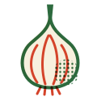

Farm notes · From the rows at Bramblecut
14,000 cloves by hand: garlic planting week
The last crate goes out tomorrow and next summer's garlic goes in this week. How we pick the seed heads, and why every clove is planted on our knees.
WrittenWed.packed Thurs.

Every year, in the third week of October, the crates get lighter and the field crew gets busier. The last crate of the season goes out tomorrow, and this week the five of us, eleven volunteers and one very patient dog are on our knees in the south beds, planting next summer's garlic one clove at a time. By Saturday night about 14,000 cloves will be in the ground.
Garlic is the one crop we plant in one year and harvest in the next. It goes in now, puts down roots before the ground freezes, sleeps under the snow all winter, and comes up green in March. You meet it in your crates three times: green garlic in early June, curly scapes at the end of June, and cured heads from mid-July on.
Saving our own seed
We have not bought seed garlic since 2015. Every July, when we pull the crop, Mae and I walk the drying racks in the barn and set aside the biggest, best-shaped heads before a single one goes into a crate. Those heads hang apart all summer, and in October they become next year's crop. Eleven years of keeping the best has turned a mail-order variety into garlic that knows this hill.
This fall we are planting four varieties:
- Music, a white hardneck and our main crop, about 60% of the beds;
- German Red, hot and purple-streaked, the one Dev asks for by name;
- Chesnok Red, which roasts sweeter than anything else we grow;
- Inchelium Red, a softneck that keeps in a cool kitchen until March.
Cracking, sorting, planting
The first job is cracking: breaking every head into cloves without tearing the papery skin. It happens around the long table in the packing shed, with coffee, and it is the most talkative day of the year. Small cloves go to the kitchen for the farm dinners. Only the big ones get planted, because a big clove grows a big head.
Then the beds, in the same order every year:
- Mark four rows a bed, six inches between cloves, with the rolling dibbler Tomás built from an old water tank.
- Push each clove in by hand, pointed end up, two inches deep.
- Close the bed and rake it smooth.
- Lay four inches of straw the week the ground first freezes.
Garlic is the patient crop. You plant it in the cold, you forget it for five months, and in March it is the first green thing on the hill, like it was waiting up for you.
What the straw is for
Garlic does not mind the cold. It minds the thaw. A bare bed in a Driftless winter freezes and thaws a dozen times, and every cycle heaves cloves up out of the soil, where they dry out and die. Four inches of straw keeps the ground frozen once it freezes, so the cloves stay put until spring.

If you are a member, the garlic in tomorrow's crate came off the same racks as this seed. Keep it cool, dark and dry, never in the fridge, and it will see you into the new year.
Want to see the beds before the straw goes on? Come down the lane this Saturday. We plant from 9 until we run out of cloves. Write to the farm so we know how much soup to make, and if you want garlic from these beds next July, 2027 shares open on February 1.
Rosa Beltrán, field crew lead